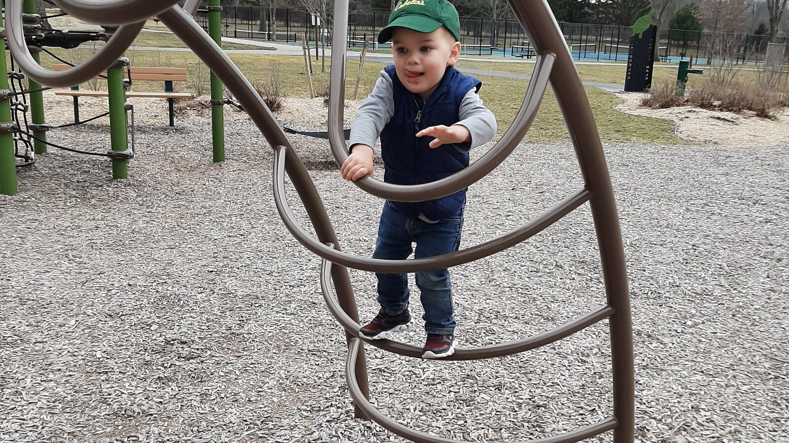

What Does a Meaningful Adult Life Look Like for Someone With Significant Disabilities?
A good adult life does not have to be measured by employment, independence, or constant progress. It can be built around safety, dignity, relationships, ordinary joy, and being known.

When parents imagine adulthood for their children, the usual milestones arrive almost automatically: work, independence, a home of their own, relationships, managing money, making plans, building a career.
But what happens when you know your child may never reach many of those milestones?
Does adulthood become something smaller?
I don't think it does.
I think we may need a better definition of a meaningful life.
For an adult with significant developmental disabilities, a good life may not look like independence. It may include substantial support every day. It may include help with food, hygiene, transportation, communication, medical care, safety, or decision-making.
And it can still be a rich, adult, deeply meaningful life.
The question is not simply, "How much can this person do independently?"
A better question may be:
Is this person safe, known, connected, comfortable, respected, and able to experience the things that matter to them?
Quality of life is bigger than independence
Researchers have been trying to define and measure quality of life for people with intellectual and developmental disabilities for decades.
One widely used framework includes emotional well-being, physical well-being, interpersonal relationships, social inclusion, personal development, self-determination, material well-being, and rights.
Independence matters within that conversation. But it is only one part of a much larger picture.
The American Association on Intellectual and Developmental Disabilities and The Arc have similarly argued that people with intellectual and developmental disabilities should have the supports, relationships, opportunities, and resources necessary to build lives that are meaningful to them.
Research specifically involving autistic adults points in the same general direction.
A systematic review found that autistic adults often report lower quality of life than the general population, while also noting an important problem: our tools for measuring autistic quality of life are still imperfect.
Another study of 370 autistic adults found that receiving support was positively associated with social and environmental quality of life. Relationships and mental health also mattered.
The study does not prove that more support automatically creates a good life, nor did it focus specifically on adults with the highest support needs. But it does challenge the assumption that needing support is itself evidence of a poor outcome.
That distinction matters.
A person can need another human being nearby throughout the day and still have a life worth enjoying.
We have turned independence into a scorecard
Independence can be a wonderful goal.
For many disabled people, increased independence means greater freedom, privacy, opportunity, and control over their own lives. Supports should never unnecessarily prevent someone from doing something they can safely do or learn to do.
But independence can become a problem when we turn it into the primary scorecard for adulthood.
- Can they cook?
- Can they live alone?
- Can they hold a job?
- Can they take public transportation?
- Can they manage their medication?
- Can they pay bills?
Those are useful questions when they help us determine what support someone needs.
They become harmful when the answers determine whether we think that person's adult life is successful.
At Casa de SAM, we reject the idea that adults must earn belonging by becoming less disabled.
That philosophy grows directly out of my experience as Sam's mother.
The question I ask about Sam
When I think about Sam's future, I am not trying to construct the most conventionally impressive version of adulthood I can force him toward.
I am trying to imagine a life that he will actually enjoy living.
That difference has changed the questions I ask.
Sam has always had things he genuinely enjoys: movement, familiar places, favorite foods, being out in the world, and interactions with people who catch his interest.
The photograph accompanying this article is simply Sam playing at a park.
There is no milestone in the picture.
Nobody is evaluating him.
He is not practicing a job skill.
He is not demonstrating independence.
He is just living.
And that counts.
It has to count.
Because if our definition of a meaningful life excludes ordinary pleasure, familiar routines, favorite places, safe relationships, rest, and simply enjoying being alive, then I think our definition is the problem.
A meaningful life can be very ordinary
Think about what makes your own life worth living.
Most of us would probably mention some combination of people we love, food we enjoy, places we like being, freedom to make ordinary choices, hobbies, traditions, faith, entertainment, quiet, laughter, pets, meaningful work, nature, comfort, travel, celebrations, or simply having a place where we feel at home.
Not every meaningful moment is productive.
Adults without disabilities are allowed to sit on the couch.
We are allowed to watch the same television show again.
We are allowed to spend Saturday doing almost nothing.
We are allowed to eat our favorite food because we like it.
We are allowed to walk around a neighborhood without turning the walk into a developmental objective.
Disabled adults deserve ordinary life too.
At Casa de SAM, we describe this as life being built for calm, joy, and home.
The goal is not to fill every hour.
The goal is to make the day understandable, safe, and livable.
Support can make freedom possible
Sometimes we talk about support and freedom as though they are opposites.
They do not have to be.
For a person who wanders or becomes disoriented, a safe walking path and attentive caregiver may create more freedom to move.
For someone who does not speak, a staff member who knows their gestures, routines, facial expressions, AAC system, sounds, and patterns may create more ability to communicate preferences.
For someone who cannot prepare food safely, having another person cook does not eliminate the possibility of choosing what to eat.
For someone who cannot travel independently, reliable transportation and a trusted companion can make community life possible.
Good support should not exist to control a person.
Good support should remove unnecessary barriers between that person and a livable life.
This is especially important when we talk about adults with significant support needs. The alternative to independence should not be isolation.
Relationships matter
Human connection is another part of quality of life that can disappear when services focus almost entirely on measurable skills.
Research on autistic adulthood repeatedly points toward the importance of relationships and social support.
More recent research exploring autistic adults' experiences with other autistic people has also found many positive experiences associated with belonging, understanding, and quality of life, although researchers note that people with co-occurring intellectual disability remain underrepresented in this research.
That limitation is important.
We should not take research involving verbally fluent autistic adults and casually assume it tells us exactly what life should look like for a non-speaking person with significant intellectual disability.
But the broader lesson is worth keeping:
People need people.
That may mean family.
It may mean friends.
It may mean housemates.
It may mean caregivers who have known someone long enough to understand the difference between their tired face, hungry face, overwhelmed face, sick face, and perfectly-content-please-leave-me-alone face.
Being known is part of care.
Participation should be meaningful to the person
Community participation is often treated as automatically beneficial.
It can be.
But participation should not mean dragging someone through a schedule of activities because it looks good on a service plan.
A review of interventions intended to increase social and community participation among adults with autism or other disabilities found that successful approaches often involved identifying the person's actual participation preferences — including where, when, how, and with whom they wanted to participate — and then providing the support necessary to make that participation possible.
That is a very different philosophy from simply keeping people busy.
One resident might love bakery mornings.
Another might like watering plants.
Another might want to attend church every Sunday.
Another might enjoy sitting near the activity without participating.
Another might prefer long stretches of quiet in their own room.
The goal should not be maximum participation.
The goal should be meaningful participation.
And sometimes meaningful choice is choosing not to participate at all.
Adults with significant disabilities are still adults
A meaningful life also requires dignity.
An adult does not become a child because they require help bathing.
They do not become a child because they cannot read.
They do not become a child because they enjoy children's television, stuffed animals, repetitive activities, simple foods, or familiar routines.
They do not lose adulthood because another person manages their money or medication.
Support needs and adulthood can exist at the same time.
That means adult privacy matters.
Personal space matters.
Preferences matter.
Relationships matter.
Personal belongings matter.
Being spoken to respectfully matters.
And having a home that actually feels like your home matters.
What about growth?
None of this means we should stop helping people learn.
If someone can develop a communication skill that gives them more control over their life, wonderful.
If they can learn to prepare a snack safely, wonderful.
If technology gives them new independence, use it.
If therapy reduces pain or helps them participate in something they value, that can be enormously important.
If someone previously thought incapable of living independently eventually can and wants to, their support system should take that possibility seriously.
The problem is not growth.
The problem is believing that a life is only meaningful while visible progress is happening.
There may come a point when years of training toward a conventional milestone would require enormous stress for very little improvement in that particular person's daily life.
Families are allowed to ask whether the goal is still serving the person.
That is not giving up.
It is changing the measurement.
What you can do this week
Write down five things that reliably make their day better
These could be foods, people, sensory experiences, places, routines, music, movement, objects, or activities.
Write down five things that predictably make life harder
Think about noise, waiting, crowds, unfamiliar people, sudden transitions, certain environments, communication failures, or physical discomfort.
Describe one genuinely good ordinary day
Not their most productive day. Not the day that would impress a therapist. Write down what a day looks like when they seem comfortable, engaged, regulated, or content.
Ask what support makes that day possible
Transportation? Supervision? Communication help? Meal preparation? Medication? Predictable routines? Someone who recognizes distress before it escalates?
Keep that page
You have just started something far more useful than a list of deficits. You have started a quality-of-life profile.
Long-term questions to consider
- What parts of their current life seem genuinely important to them?
- How do they communicate yes, no, discomfort, pleasure, boredom, fear, and preference?
- What support will allow them to continue accessing things they enjoy?
- Who will know their routines when their parents or current caregivers are no longer available?
- What kind of home would allow both safety and ordinary freedom?
- How much privacy do they need?
- What relationships should be protected over time?
- What happens if their support needs increase with age?
- Are future services built primarily around keeping them safe, or around helping them actually live?
- How will we know whether their life is good if they cannot answer a traditional quality-of-life questionnaire?
These questions do not all have immediate answers.
They are still worth asking early.
Casa de SAM's position: independence is not the price of adulthood
Casa de SAM is being designed for adults with developmental disabilities who may require lifelong support.
Our position is not that independence is bad.
Our position is that independence is not the price of a meaningful adulthood.
Residents will never be required to work to earn their home.
They will never be required to participate in classes or activities to prove they are progressing.
The bakery will not depend upon resident labor.
The farm will not depend upon resident labor.
A resident who loves decorating cookies may decorate cookies.
A resident who enjoys watering plants may water plants.
A resident who prefers sitting in a familiar chair listening to the same song may do that too.
Support should be offered.
Opportunity should be available.
Growth should be celebrated.
But belonging does not have to be earned.
A meaningful life can include work, learning, independence, and achievement.
It can also include a favorite breakfast, a familiar walking route, someone who understands your communication, a quiet bedroom, a person you're happy to see, somewhere safe to move your body, a good meal, an afternoon nap, and knowing that tomorrow you will still be home.
Ordinary life is not wasted life.
Adults with significant disabilities deserve enough safety, support, dignity, and belonging to have ordinary lives of their own.
Sources and further reading
- Ayres M, Parr JR, Rodgers J, et al. A systematic review of quality of life of adults on the autism spectrum. Autism. 2018.
- Mason D, McConachie H, Garland D, et al. Predictors of quality of life for autistic adults. Autism Research. 2018.
- Giummarra MJ, Randjelovic I, O'Brien L. Interventions for social and community participation for adults with intellectual disability, psychosocial disability or on the autism spectrum. 2022.
- Watts G, Crompton C, Grainger C, et al. Autistic adults' experiences of interacting with other autistic people and its relation to Quality of Life. Autism.
- American Association on Intellectual and Developmental Disabilities and The Arc: Quality of Life Joint Position Statement.
About Casa de SAM
Casa de SAM is a developing vision for a lifelong residential community in Paraguay for adults with autism and other developmental disabilities who need substantial daily support. The project is being built around one central promise: residents should be safe, known, respected, and able to belong without having to earn their place through productivity or independence.
Casa de SAM is not yet an operating nonprofit or residential provider. We are currently researching, documenting the vision, and looking for people who may eventually help build it responsibly.
This article provides general educational information and describes Casa de SAM's developing philosophy. It is not individualized medical, therapeutic, legal, developmental, or residential-placement advice. Support needs, abilities, preferences, risks, and appropriate goals differ from person to person.